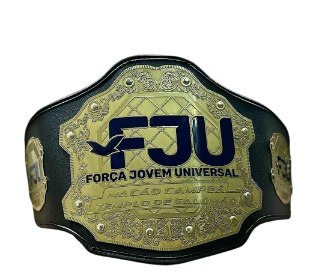
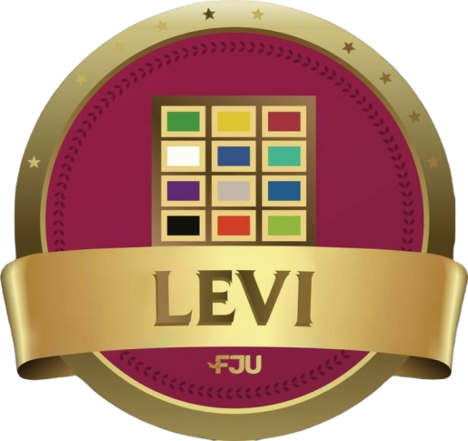
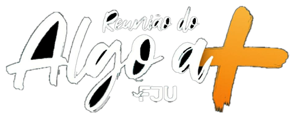
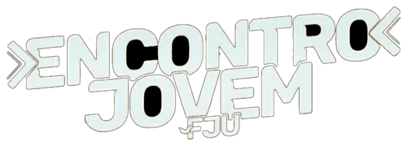

Judá
Coragem para avançar
Judá era a tribo que ia na frente na hora da batalha. Aqui é igual: é a tribo que puxa o convite, que chama o amigo de fora e não tem medo de dar o primeiro passo.
“Judá é um leãozinho... quem o despertará?” — Gênesis 49:9
Judá
0
pontos
disputa pelo

título

Levi
0
pontos
Cada jovem entra numa tribo no começo do Rally e fica nela até a final. Tudo o que você faz — presença, convite, prova, projeto — vira ponto pro seu lado.
Coragem para avançar
Judá era a tribo que ia na frente na hora da batalha. Aqui é igual: é a tribo que puxa o convite, que chama o amigo de fora e não tem medo de dar o primeiro passo.
“Judá é um leãozinho... quem o despertará?” — Gênesis 49:9
Fidelidade no serviço
Levi cuidava do altar quando ninguém estava olhando. É a tribo da constância: chega cedo, monta, serve, guarda e volta na semana seguinte fazendo tudo de novo.
“Quem é do Senhor venha até mim.” — Êxodo 32:26


Atualizado pela organização a cada rodada. Quem estiver organizando pode abrir o modo de edição, lançar os pontos e o placar do topo se ajusta na hora.
| Prova | Judá | Levi |
|---|---|---|
| Total | 0 | 0 |
Os pontos ficam salvos só neste aparelho, no navegador. A linha "Presença dos jovens" é automática e compartilhada — vem do Cadastro.
Cadastre uma vez. Toda semana, marque os dias que você veio — quarta, sexta, sábado ou domingo — e cada um vale 10 pontos na hora pra sua tribo.
Carregando...
Cinquenta perguntas sobre as duas tribos. Escolha o seu lado, responda e veja quantos pontos você conseguiria levar pra sua tribo.
Por qual tribo você joga?
acertos
0/50
Cada projeto da FJU entra no Rally com uma missão própria. Clique num projeto pra ver quem já faz parte dele e colocar a sua foto também.
Os pontos ficam salvos só neste aparelho, no navegador.
Palavras que marcam o Rally. Assista e, se você organiza a página, adicione novos vídeos direto por aqui.
Carregando...
A trilha que embala essa disputa. Toca uma de cada vez — dá play e escuta.
Carregando...
Quem já faz parte
Nenhuma foto ainda. Seja o primeiro.